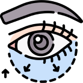
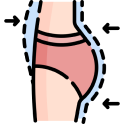
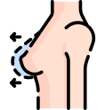
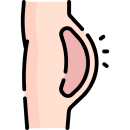

Plastic Surgery
Face Lift Surgery
Operational interventions for the purpose of face rejuvenation...
Blepharoplasty
Plastic surgery on eyelids is a popular cosmetic reconstructive...
Rhinoplasty
Operational interventions for the purpose of face rejuvenation...
Liposuction
Liposuction, or simply lipo, is a type of fat removal procedure used in plastic surgery....
Abdominoplasty
Abdominoplasty is one of the most popular plastic surgeries in the...
Mamoplasty
Tender skin of breasts in time over-stretches and gradually loses its...
Lip Plasty
Operational interventions for the purpose of face rejuvenation are being carried out for ...
Brachioplasty
Arm lift, arm dermolipectomy, or brachioplasty all refer to the ...
Lipofilling
Lipofilling, also known as fat grafting or autologous fat transfer...